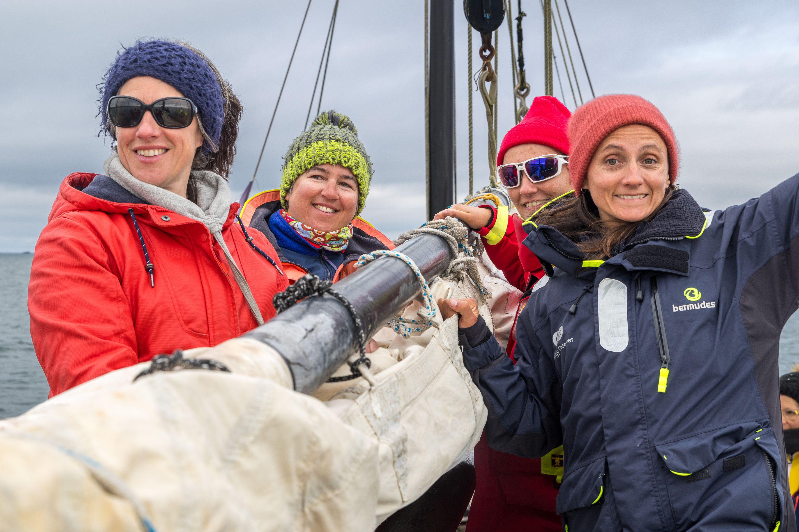

Meeting fishermen in Anita Conti's wake
 Is it possible to eat sustainable fish?
Is it possible to eat sustainable fish?
“Who are these men, who live offshore in such difficult living conditions? How do these men tell the world? They feed the landlubbers, yet we know nothing about them...”
Anita Conti
Four crew members set sail from Brittany to Norway, following in the wake of the woman sailors nicknamed “the Lady of the Sea,” a leading figure in oceanography, literature, and photography who was already warning us about the limits of overfishing. Following in her footsteps, from port to port, we will meet fishermen and seafarers to raise awareness among the general public and young people about the crucial issues of sustainable fishing and highlight the beauty of the fishing profession.
The effects of overfishing are invisible to our eyes. Sustainable fishing is considered by scientists and ocean conservation organizations as a promising alternative for preserving marine ecosystems. It exists and deserves our full attention!
For more information, you can find the project presentation link here.


Anita Conti, with Catherine Chabaud and Paul Vatine.